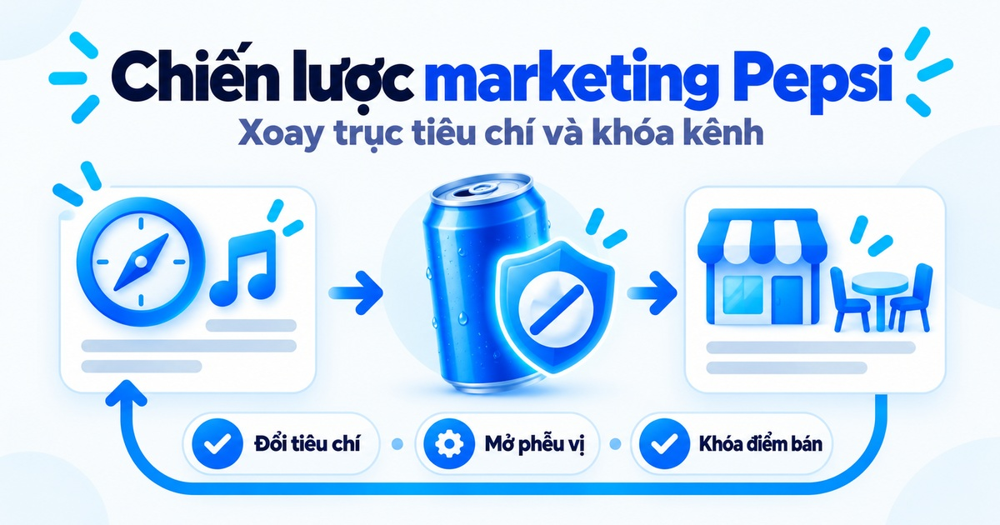
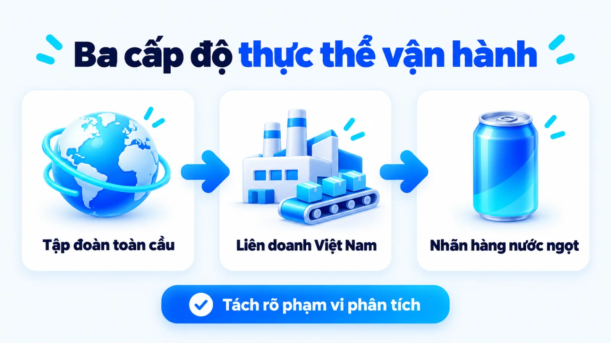
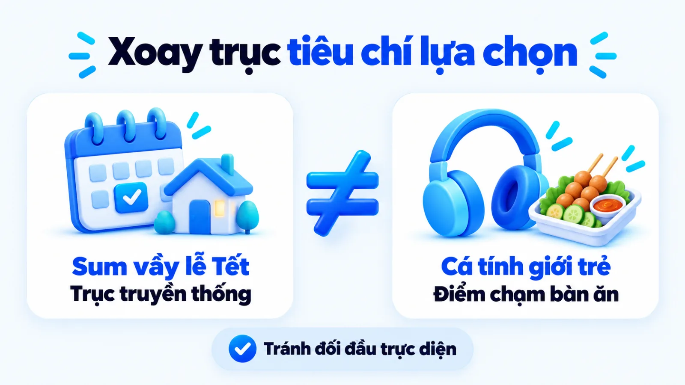
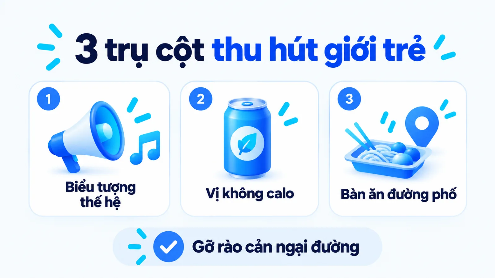
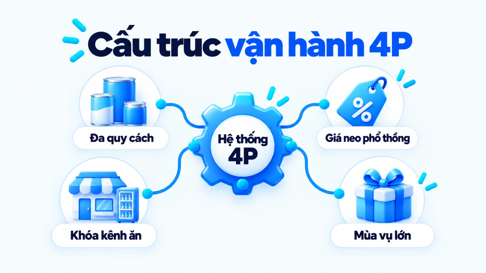
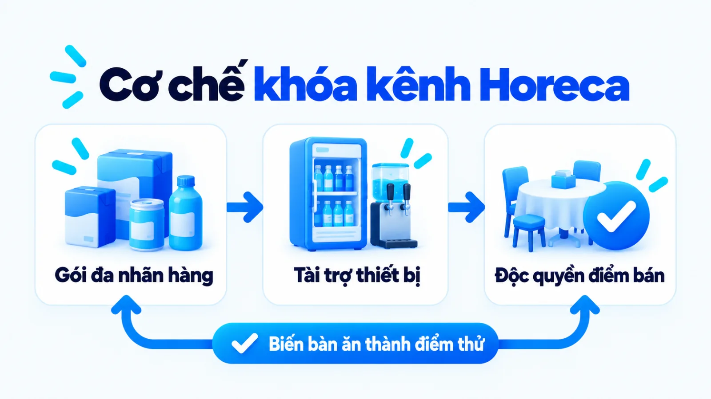
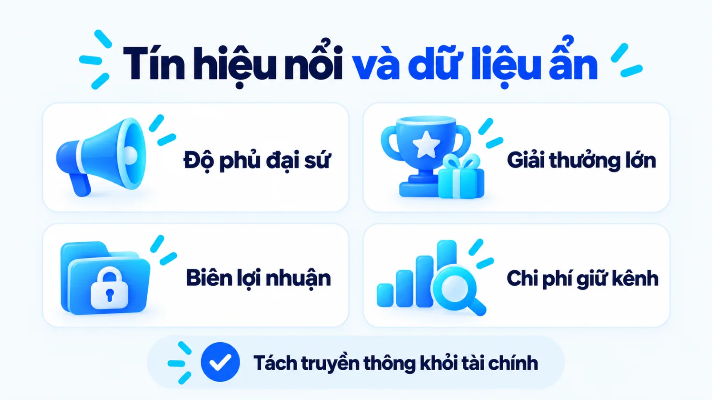
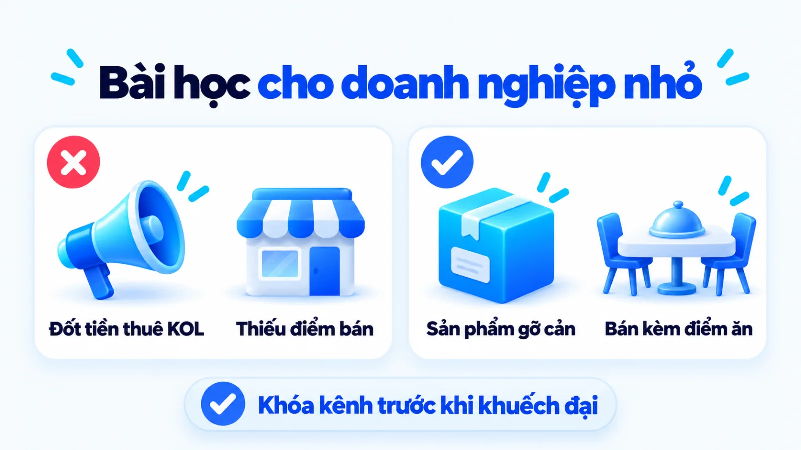

Chiến lược marketing của Pepsi thắng nhờ đâu?
Chiến lược marketing của Pepsi là hệ thống các lựa chọn định vị, phát triển danh mục sản phẩm và kiểm soát kênh phân phối giúp nhãn hàng thách thức đối thủ dẫn đầu trong ngành nước giải khát có ga tại Việt Nam. Khi quan sát độ phủ của các chiến dịch âm nhạc đại chúng hay dòng sản phẩm không calo, người làm nghề rất dễ đánh đồng sức nóng truyền thông bề nổi với hiệu quả thương mại thực tế tại điểm bán. Với doanh nghiệp vừa và nhỏ, việc phân biệt rõ cơ chế xoay trục tiêu chí lựa chọn của nhãn hàng lẻ với sức mạnh chuỗi cung ứng của liên doanh đứng sau sẽ quyết định bài học nào áp dụng được và bài học nào gây lãng phí ngân sách. Tôi là Lê Tuấn Việt, Marketing Leader tại TAKI Group. Trong bài viết này, tôi phân tích dữ kiện vận hành của Pepsi tại Việt Nam, giải mã cơ chế phối hợp sản phẩm với kênh ăn uống tại chỗ và xác lập điều kiện chuyển giao thực tế theo nguồn lực.
- Đăng ngày
- Cập nhật

Tóm tắt nhanh
- Chiến lược marketing của Pepsi tại Việt Nam không tách rời năng lực sản xuất và mạng lưới phân phối 13 thương hiệu của liên doanh Suntory PepsiCo Việt Nam.
- Thay vì đối đầu trực diện trên thông điệp gắn kết gia đình truyền thống, nhãn hàng kéo người mua trẻ về hệ tiêu chí cá tính thế hệ, âm nhạc và ẩm thực đường phố.
- Dòng Pepsi vị chanh không calo đóng vai trò sản phẩm mở phễu giúp tháo gỡ rào cản ngại đường khi ăn đồ chiên nướng, trong khi kênh ăn uống tại chỗ giữ sản lượng tiêu thụ nền.
- Doanh nghiệp vừa và nhỏ chỉ nên học cơ chế định nghĩa lại tiêu chí ở ngách hẹp và hợp tác bán kèm tại điểm tiêu dùng trực tiếp, tránh sao chép lối đốt ngân sách đại sứ đại chúng.
Mục lục bài viết7 phần
Chiến lược marketing của Pepsi và hồ sơ dữ kiện
Chiến lược marketing của Pepsi tại Việt Nam là cách nhãn hàng nước giải khát có ga thuộc liên doanh Suntory PepsiCo xoay trục tiêu chí cạnh tranh sang cá tính thế hệ trẻ, dòng sản phẩm không calo và điểm chạm ẩm thực đường phố, thay vì đối đầu trực diện trên thông điệp gia đình truyền thống.
Hồ sơ dữ kiện công khai tại thị trường Việt Nam, cập nhật năm 2024
Tổ chức vận hành, lịch sử hiện diện và quy mô danh mục của Suntory PepsiCo Việt Nam
Theo thông tin công bố chính thức năm 2024 trên trang doanh nghiệp của Suntory PepsiCo Việt Nam, đơn vị trực tiếp sản xuất và phân phối nhãn hàng Pepsi tại Việt Nam vận hành theo mô hình liên minh chiến lược giữa Tập đoàn Suntory (Nhật Bản) và PepsiCo (Mỹ). Dữ liệu phỏng vấn kỷ niệm cột mốc hoạt động đăng trên Báo Tuổi Trẻ ngày 31/12/2024 ghi nhận doanh nghiệp bắt đầu hiện diện tại thị trường Việt Nam từ năm 1994, đánh dấu chặng đường 30 năm vào năm 2024 và mở rộng danh mục từ hai nhãn ban đầu là Pepsi cùng 7UP lên 13 thương hiệu.
- 1994
- Năm bắt đầu hiện diện tại thị trường Việt Nam
- 30 năm
- Cột mốc hoạt động tính đến năm 2024 theo công bố
- 13 nhãn
- Quy mô thương hiệu trong danh mục của liên doanh
Khi đọc một hồ sơ thuộc nhóm dự án và bài học ngành hàng tiêu dùng nhanh, tức FMCG (Fast-Moving Consumer Goods: nhóm sản phẩm tiêu dùng quay vòng nhanh có giá bán đơn vị thấp và tần suất mua lặp lại cao), bước đầu tiên là xác định đúng ranh giới của chủ thể đang được phân tích. Nếu gộp chung báo cáo toàn cầu của tập đoàn mẹ vào một nhãn hàng nước ngọt tại địa phương, người đọc sẽ rút ra những kết luận sai lệch về nguồn lực thực thi.

Phạm vi giữa PepsiCo, liên doanh và nhãn Pepsi
Nhiều bài tổng hợp trên thị trường thường trích dẫn lịch sử sáp nhập toàn cầu của PepsiCo như thể đó là hoạt động của riêng lon nước ngọt Pepsi tại Việt Nam. Để đọc đúng cơ chế thương mại, người phụ trách marketing cần phân biệt rõ ba cấp độ thực thể vận hành gồm: tập đoàn toàn cầu, liên doanh nội địa và nhãn hàng sản phẩm lẻ.
- Tập đoàn PepsiCo toàn cầu: đơn vị đa quốc gia sở hữu cả mảng đồ uống lẫn thực phẩm đóng gói như Frito-Lay hay Quaker trên phạm vi quốc tế, nơi hoạch định tài sản thương hiệu gốc và danh mục đầu tư dài hạn.
- Liên doanh Suntory PepsiCo Việt Nam: pháp nhân trực tiếp quản trị chuỗi cung ứng, nhà máy, đội ngũ bán hàng và mạng lưới phân phối cho toàn bộ 13 thương hiệu đồ uống tại thị trường Việt Nam như Pepsi, 7UP, Mirinda, Sting, Aquafina hay Trà Ô Long TEA+.
- Nhãn hàng nước giải khát Pepsi: một thương hiệu thành viên nằm trong danh mục của liên doanh, đảm nhiệm vai trò cạnh tranh trực tiếp ở phân khúc nước ngọt có ga hương cola thông qua các biến thể truyền thống và không calo.
Điểm tôi muốn làm rõ ngay từ đầu bài là sức mạnh của nhãn hàng Pepsi tại Việt Nam không đứng độc lập. Một nhãn nước ngọt đơn lẻ rất khó tự gánh chi phí vận tải, tủ mát trưng bày và chiết khấu đại lý trên khắp các tỉnh thành nếu không chia sẻ hạ tầng đó cùng mười hai thương hiệu anh em trong cùng một chuyến xe giao hàng của liên doanh.
Bối cảnh đối đầu trực diện trong ngành nước ngọt
Trong ngành nước giải khát có ga hương cola, cấu trúc cạnh tranh từ lâu đã định hình thế đối đầu giữa hai thương hiệu lớn nhất thị trường. Khi đối thủ dẫn đầu đã chiếm lĩnh vững chắc liên tưởng về sự sum vầy gia đình, truyền thống lễ Tết và cảm xúc gắn kết đa thế hệ, người đi sau sẽ gặp bất lợi lớn nếu tiếp tục đổ tiền vào cùng một hệ thông điệp.
Trong tâm lý học nhận thức và hoạch định định vị, nếu thương hiệu thứ hai cố nói lời giống hệt thương hiệu thứ nhất với ngân sách tương đương, người tiêu dùng thường quy kết thông điệp đó về cho kẻ dẫn đầu. Tương tự cách tiếp cận trong bài phân tích chiến lược marketing của Apple cho doanh nghiệp nhỏ, giá trị cốt lõi của case study không nằm ở việc bắt chước quy mô chi tiêu, mà nằm ở cách thương hiệu thiết lập một hệ quy chiếu mới nơi mình có lợi thế.

Cơ chế người đi sau định nghĩa lại tiêu chí mua
Thay vì tranh giành hình ảnh sum vầy truyền thống, Pepsi dịch chuyển hệ tiêu chí lựa chọn của nhóm khách hàng trẻ sang nhu cầu thể hiện cá tính thế hệ, giải tỏa lo ngại đường huyết bằng dòng vị chanh không calo và xuất hiện dày đặc tại các điểm chạm âm nhạc cùng ẩm thực đường phố. Ba cơ chế hành vi giữ vai trò trụ cột trong cách định vị này gồm:
- Đổi trục giá trị biểu tượng: Chuyển từ cảm xúc đoàn viên gia đình sang tiếng nói cá tính của thế hệ trẻ tại các không gian giao tiếp công cộng.
- Gỡ rào cản bằng sản phẩm phễu: Dùng biến thể vị chanh không calo để giải quyết tâm lý ngại nạp đường khi thưởng thức các món chiên nướng.
- Khóa ngữ cảnh tiêu dùng thực tế: Gắn chặt sự hiện diện của lon nước với sự kiện âm nhạc đại chúng và thói quen ăn uống đường phố của người trẻ.
Đổi trục từ gắn kết gia đình sang cá tính thế hệ
Khi người tiêu dùng chọn một lon nước ngọt trong bữa cơm gia đình, tiêu chí ưu tiên thường là sự quen thuộc mà cả ông bà, cha mẹ lẫn con cái đều chấp nhận. Ngược lại, khi một nhóm bạn trẻ thuộc thế hệ Gen Z (nhóm nhân khẩu học sinh ra từ cuối thập niên 1990 đến đầu thập niên 2010) tụ tập tại quán ăn vỉa hè hoặc sự kiện âm nhạc, lon nước trên tay lại mang thêm chức năng biểu đạt phong cách.
Theo thông tin đăng trên Báo Tuổi Trẻ ngày 21/09/2020 về hoạt động truyền thông khu vực châu Á và Việt Nam, Pepsi đã công bố nhóm nhạc BlackPink làm đại diện phát ngôn cho dòng sản phẩm mới với thông điệp nguyên văn là "thế hệ Pepsi Cola mới, Không Calo lan toả tiếng nói của giới trẻ". Thay vì thuyết phục người mua rằng sản phẩm của mình truyền thống hơn, nhãn hàng định nghĩa lại cuộc chơi theo trục thế hệ: lựa chọn của người trẻ hiện đại, năng động và dám thể hiện bản thân.
Để dễ hình dung cơ chế tách lớp giá trị này, có thể liên hệ với cách ngành đồng hồ đặt đồng hồ thể thao thông minh cạnh đồng hồ cơ truyền thống: sản phẩm mới không cố chứng minh mình có bộ máy cơ khí lâu đời hơn, mà đổi hẳn tiêu chí đánh giá sang nhịp sống năng động hàng ngày. Phép đối chiếu này chỉ dùng để làm rõ cơ chế xoay trục tiêu chí trong định vị, không phải bằng chứng cho thấy khách hàng hai ngành có cùng động cơ mua hàng.
Tuy nhiên, dữ kiện truyền thông năm 2020 chỉ xác nhận định hướng thông điệp và việc hợp tác đại sứ thương hiệu nhằm thu hút sự chú ý của Gen Z. Nguồn công bố không đi kèm số liệu về tỷ lệ chuyển đổi thành doanh số thực tế hay mức độ trung thành dài hạn của nhóm người hâm mộ sau khi chiến dịch kết thúc.

Giải bài toán vị giác với dòng chanh không calo
Nếu chỉ đổi thông điệp truyền thông mà giữ nguyên sản phẩm nước ngọt có đường truyền thống, chiến lược xoay trục sang giới trẻ sẽ vấp phải một rào cản sinh học và lối sống rất thực tế. Phân khúc người tiêu dùng đô thị trẻ ngày càng quan tâm đến việc kiểm soát lượng đường nạp vào cơ thể, quản lý cân nặng và giữ gìn vóc dáng.
Trên trang thông tin chính thức năm 2024, Suntory PepsiCo Việt Nam xác nhận định hướng "nghiên cứu để cho ra đời những sản phẩm giảm đường hoặc không đường" nhằm đáp ứng xu hướng tiêu dùng lành mạnh hơn. Trong chiến lược marketing của Pepsi vị chanh không calo, nhãn hàng không chỉ loại bỏ năng lượng từ đường mà còn bổ sung hương vị chanh kết hợp cùng thiết kế bao bì màu đen cá tính.
Xét dưới góc độ điểm chạm sử dụng, khi một người trẻ ngồi trước bàn đồ nướng, lẩu cay hoặc gà rán, họ thường xuất hiện câu hỏi ngầm: uống nước lọc thì thiếu cảm giác sảng khoái giảm ngấy, nhưng uống nước ngọt có đường lại sợ dư thừa năng lượng (ví dụ biên tập, không phải kết quả khách hàng thật). Vị chanh thanh mát kết hợp chất tạo ngọt không calo giải quyết đúng mâu thuẫn tâm lý đó ngay tại bàn ăn, biến dòng sản phẩm này thành phễu thu hút nhóm khách hàng từng có ý định từ bỏ nước ngọt có ga.
Cần phân biệt rõ vai trò danh mục ở đây: dòng vị chanh không calo đóng vai trò sản phẩm mở phễu trải nghiệm và tạo chủ đề thảo luận trên các kênh social media marketing digital, trong khi dòng Pepsi lon xanh truyền thống vẫn giữ vai trò tạo sản lượng nền ở các kênh phân phối đại chúng. Các nguồn công khai hiện chưa tách bạch tỷ trọng doanh thu giữa biến thể không calo và dòng có đường truyền thống tại Việt Nam.
Khóa điểm chạm qua âm nhạc và ẩm thực đường phố
Một định vị hướng tới giới trẻ sẽ chỉ nằm trên màn hình điện thoại nếu thương hiệu không xuất hiện đúng vào khoảnh khắc người mua phát sinh nhu cầu giải khát. Pepsi đã nối liền khoảng cách từ nhận biết truyền thông đến hành vi mở lon bằng cách bám chặt vào hai ngữ cảnh sinh hoạt đặc trưng của người trẻ Việt Nam: các lễ hội âm nhạc và văn hóa ẩm thực đường phố.
Ở ngữ cảnh âm nhạc, nhãn hàng liên tục gắn hình ảnh với các nghệ sĩ nhạc trẻ, chương trình biểu diễn ngoài trời và dòng nhạc rap, pop đương đại để củng cố dấu hiệu nhận diện thế hệ. Ở ngữ cảnh ẩm thực, thông điệp truyền thông luôn đặt lon Pepsi cạnh các món ăn đậm vị, chiên xào, nướng lẩu để xây dựng phản xạ liên tưởng có điều kiện: cứ ăn món ngon đường phố là gọi nước ngọt có ga để cân bằng vị giác.
Giới hạn cần đặt ngay cạnh nhận định này là độ phủ hình ảnh tại các lễ hội âm nhạc hay khu phố ẩm thực đòi hỏi chi phí tài trợ địa điểm và ngân sách kích hoạt thương hiệu rất lớn. Doanh nghiệp nhỏ nếu chỉ nhìn thấy bề nổi sôi động của sự kiện mà không tính đến hệ thống tủ mát và đại lý bán lẻ vây quanh khu vực đó sẽ không thể thu hồi vốn qua doanh số bán lẻ.
Thực thi 4P trong chiến lược marketing của Pepsi
Mô hình 4P trong chiến lược marketing của Pepsi tại Việt Nam vận hành như một hệ thống thương mại khép kín, nơi cải tiến sản phẩm và truyền thông âm nhạc tạo lực kéo nhận biết, còn mạng lưới phân phối Horeca cùng chính sách khuyến mãi thùng theo mùa vụ quyết định sản lượng tiêu thụ thực tế. Thay vì tách rời các chiến dịch quảng cáo khỏi cấu trúc kinh doanh, bảng dưới đây hợp nhất bốn trụ cột thực thi của nhãn hàng.
| Trụ cột 4P | Triển khai thực tế | Cơ chế thương mại |
|---|---|---|
| Sản phẩm (Product) | Duy trì cola truyền thống, đẩy mạnh Pepsi Không Calo vị chanh và đa dạng quy cách lon, chai nhựa, thủy tinh | Dùng dòng không calo gỡ rào cản ngại đường của người trẻ, đa dạng quy cách bao bì để khớp từng điểm bán |
| Giá bán (Price) | Định giá bán lẻ phổ thông cạnh tranh trực tiếp đối thủ, kết hợp chiết khấu theo lốc và thùng vào dịp cao điểm | Giữ ngưỡng giá dễ mua lặp lại hàng ngày, dùng ưu đãi số lượng lớn để khóa ngân sách chi tiêu dịp lễ Tết |
| Phân phối (Place) | Phủ rộng tạp hóa truyền thống, siêu thị hiện đại và liên kết chặt kênh ăn uống tại chỗ, chuỗi thức ăn nhanh | Chia sẻ chi phí logistics cùng danh mục 13 thương hiệu của liên doanh, khóa điểm chạm ngay lúc khách gọi món |
| Xúc tiến (Promotion) | Kết hợp đại sứ âm nhạc Gen Z, quảng cáo ngoài trời, truyền thông số với chương trình bật nắp trúng thưởng Tết | Kết hợp xây dựng tài sản thương hiệu dài hạn với kích cầu mua hàng trực tiếp tại điểm bán trong ngắn hạn |
Lưu ý khi đọc bảng trên: các mô tả về cơ chế thương mại là phần phân tích nghiệp vụ dựa trên hoạt động quan sát được trên thị trường và dữ kiện công bố của doanh nghiệp, không phải báo cáo kiểm toán hiệu quả tài chính của từng trụ cột. Để thấy rõ cách bốn chữ P khóa chặt lẫn nhau, cần mổ xẻ sâu hơn mối quan hệ giữa cấu trúc giá, bao bì và kênh phân phối.

Sản phẩm và giá bám sát nhu cầu giải khát
Trong chiến lược kinh doanh của Pepsi tại một thị trường nhiệt đới và nhạy giá như Việt Nam, quyết định về sản phẩm và giá luôn đi đôi với nhau theo từng hoàn cảnh mua sắm. Một sinh viên mua lẻ một lon nước tại cửa hàng tiện lợi có mức sẵn sàng chi trả và nhu cầu sử dụng rất khác với một bà nội trợ mua nguyên thùng hai mươi bốn lon để tiếp khách dịp Tết.
Việc phát triển song song chai thủy tinh hoàn trả vỏ tại quán ăn bình dân, lon nhôm 320ml tại siêu thị và chai nhựa dung tích lớn cho nhóm nhiều người giúp nhãn hàng điều chỉnh mức giá trên mỗi lần chi trả phù hợp với túi tiền đại chúng. Khi khách hàng đã quen với mức giá neo phổ thông tại điểm bán lẻ, rào cản tài chính cho việc dùng thử các biến thể mới như dòng vị chanh không calo gần như bằng không.
Để đảm bảo năng lực cung ứng cho chiến lược giá đại chúng này, tối ưu hóa chi phí sản xuất và chuỗi cung ứng là điều kiện bắt buộc. Theo bài viết trên VnExpress năm 2024, Suntory PepsiCo Việt Nam triển khai kế hoạch "chuyển 4 dây chuyền sản xuất từ nhà máy tại Quận 12" về nhà máy tại Khu công nghiệp Hựu Thạnh, tỉnh Long An. Những động thái tái cơ cấu hạ tầng công nghiệp như vậy chính là nền tảng vật chất giúp doanh nghiệp duy trì biên độ giá cạnh tranh trên toàn quốc.
Kênh phân phối Horeca kết hợp truyền thông mùa vụ
Tại sao người tiêu dùng vào nhiều chuỗi gà rán, tiệm pizza hoặc quán lẩu nướng lại chỉ thấy phục vụ sản phẩm của Suntory PepsiCo mà không có đối thủ trực tiếp? Câu trả lời nằm ở chiến thuật khóa kênh Horeca (Hotel, Restaurant, Catering: kênh phân phối qua khách sạn, nhà hàng và dịch vụ ăn uống tại chỗ) kết hợp với sức mạnh danh mục đa nhãn hàng.
Khi đàm phán thương mại B2B (Business-to-Business: giao dịch kinh doanh giữa doanh nghiệp với doanh nghiệp) với một chuỗi thức ăn nhanh hoặc hệ thống nhà hàng, liên doanh không chỉ chào bán một lon Pepsi. Họ cung cấp trọn gói giải pháp đồ uống gồm nước ngọt hương cola, nước ngọt hương chanh 7UP, hương cam Mirinda, nước tăng lực Sting, trà đóng chai TEA+ và nước tinh khiết Aquafina, đi kèm hỗ trợ thiết bị tủ mát hoặc máy rót nước tươi tại quầy.
Đối với chủ chuỗi nhà hàng, việc làm việc với một nhà cung cấp đáp ứng trọn vẹn nhu cầu giải khát của thực khách giúp giảm chi phí vận hành đơn hàng và tối ưu chiết khấu thương mại. Đối với nhãn hàng Pepsi, mỗi suất ăn combo gồm gà rán và nước ngọt bán ra không chỉ mang lại doanh thu tức thời, mà còn biến nhà hàng thành phòng trưng bày sống động củng cố thói quen uống Pepsi kèm đồ ăn nhanh của giới trẻ.
Song song với việc giữ sản lượng ổn định qua kênh ăn uống tại chỗ, nhãn hàng đẩy mạnh các đợt kích cầu quy mô lớn tại kênh bán lẻ truyền thống và hiện đại vào mùa cao điểm. Theo thông tin công bố trên Báo Tuổi Trẻ ngày 15/12/2022, chương trình khuyến mãi bật nắp dịp Tết Quý Mão 2023 áp dụng đồng thời cho Pepsi (bao gồm cả Pepsi Không Calo Vị Chanh), 7UP và Mirinda có "tổng giá trị giải thưởng lên đến hơn 37 tỉ đồng" với cơ hội trúng 9kg vàng. Việc gộp chung nhiều nhãn hàng vào một cơ chế khuyến mãi giúp liên doanh chia nhỏ chi phí truyền thông trên tổng sản lượng tiêu thụ khổng lồ dịp cuối năm.

Đối chiếu tín hiệu bề nổi và cơ chế thương mại
Các dữ kiện truyền thông công khai chỉ xác nhận quy mô lịch sử hiện diện, số lượng thương hiệu trong danh mục và thông điệp chiến dịch của Pepsi, nhưng chưa chứng minh được biên lợi nhuận ròng, tỷ lệ giữ chân sau khuyến mãi hay hiệu quả độc lập khi tách rời hệ thống phân phối của Suntory PepsiCo. Bảng dưới đây tách bạch rõ phần bằng chứng xác thực khỏi các suy luận quá đà.
| Dữ kiện nguồn xác nhận | Diễn giải cơ chế | Giới hạn và khả năng khác |
|---|---|---|
| 30 năm, 13 nhãn (2024) | Danh mục 13 thương hiệu sau 30 năm (Tuổi Trẻ, 2024) giúp chia sẻ chi phí vận tải, tủ mát và đàm phán đại lý | Số do doanh nghiệp tự công bố; chưa bóc tách thị phần và doanh thu riêng của nhãn hàng Pepsi tại Việt Nam |
| Đại sứ BlackPink (2020) | Chọn BlackPink đại diện dòng Không Calo (Tuổi Trẻ, 2020) để xoay trục sang Gen Z và tạo thảo luận tự nhiên | Bài báo chỉ ghi nhận thông điệp truyền thông; chưa có dữ liệu kiểm chứng tỷ lệ mua lặp lại sau chiến dịch |
| Khuyến mãi Tết 37 tỉ (2022) | Giải thưởng Tết hơn 37 tỉ đồng (Tuổi Trẻ, 2022) thúc đẩy đại lý nhập thùng và kích thích khách mua combo | Tổng giá trị giải thưởng gộp cả Pepsi, 7UP, Mirinda; không phản ánh biên lợi nhuận ròng sau khuyến mãi |
| Chuyển 4 dây chuyền (2024) | Chuyển 4 dây chuyền về Long An (VnExpress, 2024) giúp tập trung công suất và tối ưu chi phí chuỗi cung ứng | Dữ kiện vận hành nhà máy; chưa thể suy rộng trực tiếp thành mức tăng trưởng thị phần tiêu dùng cuối |
Khi đọc bảng đối chiếu trên, người làm marketing tổng thể cần giữ nguyên tắc kiểm chứng hai chiều: một chiến dịch truyền thông rầm rộ trên báo chí là điều kiện cần để duy trì độ hiện diện tâm trí, nhưng hiệu quả kinh doanh cuối cùng luôn phụ thuộc vào bài toán chi phí kênh và tỷ lệ mua lặp lại.
Giới hạn của các số liệu truyền thông công khai
Trong quá trình thẩm định các bản kế hoạch marketing, tôi thường thấy nhiều đội ngũ lấy lượt xem video âm nhạc hoặc độ phủ của đại sứ thương hiệu làm bằng chứng khẳng định một sản phẩm mới đã thành công về mặt thương mại. Với trường hợp của Pepsi tại Việt Nam, có ba khoảng trống dữ liệu mà người đọc cần nhận diện rõ để không suy diễn tương quan thành nhân quả.
Thứ nhất, các báo cáo thị phần chi tiết tách riêng từng nhãn hàng nước ngọt có ga và tỷ trọng doanh số giữa dòng có đường với dòng không calo thuộc sở hữu của các đơn vị nghiên cứu thị trường độc lập có thu phí, chưa được công bố kiểm toán rộng rãi trên báo chí đại chúng. Thứ hai, sự hiện diện độc quyền của Pepsi tại nhiều chuỗi thức ăn nhanh có thể đến từ điều khoản hợp đồng tài trợ thương mại và chiết khấu B2B, không đồng nghĩa mọi thực khách vào quán đều chủ động yêu cầu nhãn hiệu này. Thứ ba, các chiến dịch khuyến mãi giải thưởng hàng chục tỉ đồng giúp đẩy số lượng thùng hàng xuất kho ngắn hạn, nhưng có thể làm co hẹp biên lợi nhuận nếu khách hàng chỉ mua vì giải thưởng rồi ngưng tiêu thụ sau Tết.
Hiểu rõ những giới hạn này giúp người làm chiến lược Digital Marketing tránh được cái bẫy ca ngợi một chiều. Độ phủ truyền thông không phải là biên lợi nhuận.

Bài học từ chiến lược của Pepsi cho doanh nghiệp
Doanh nghiệp vừa và nhỏ tại Việt Nam không thể sao chép ngân sách đại sứ toàn cầu hay hạ tầng mười ba thương hiệu của Suntory PepsiCo, nhưng hoàn toàn áp dụng được cơ chế xoay trục tiêu chí lựa chọn ở ngách hẹp và khóa điểm chạm bán kèm tại kênh tiêu dùng trực tiếp. Bảng chuyển giao dưới đây xác lập điều kiện áp dụng, ngoại lệ đảo chiều và bước thử nghiệm nhỏ cho SME.
| Bài học cơ chế | Điều kiện phù hợp và ngoại lệ | Việc thử nhỏ và tín hiệu đo |
|---|---|---|
| Xoay trục tiêu chí ngách | Hợp khi đối thủ lớn đã khóa trục công năng chung; đảo chiều với hàng kỹ thuật B2B chỉ chấm theo thông số | Thử hai góc thông điệp giải quyết một rào cản cụ thể trên nhóm nhỏ, đo tỷ lệ phản hồi có nhu cầu thật |
| Làm sản phẩm phễu gỡ rào cản | Hợp khi khách cũ ngần ngại vì một nhược điểm rõ ràng; đảo chiều khi quy trình vận hành lõi chưa ổn định | Ra mắt một gói sản phẩm hoặc biến thể thử nghiệm nhỏ, đo tỷ lệ khách mới dùng thử và quay lại mua lần hai |
| Khóa điểm chạm bán kèm | Hợp khi sản phẩm bổ trợ trực tiếp cho một dịch vụ khác; đảo chiều khi biên lợi nhuận quá mỏng để chia sẻ | Ký gửi hoặc ghép combo tại một vài điểm bán đối tác cùng tệp khách, đo chi phí trên mỗi đơn hàng phát sinh |
| Gộp danh mục khuyến mãi | Hợp khi có các sản phẩm bổ trợ để tăng giá trị giỏ hàng; đảo chiều khi chỉ có một sản phẩm đơn lẻ biên thấp | Thử nghiệm gói mua chung dịp cao điểm cho khách hiện hữu, theo dõi giá trị đơn hàng trung bình và lãi ròng |
Bảng chuyển giao trên chỉ phát huy giá trị khi người lập kế hoạch marketing đối chiếu trung thực với năng lực cung ứng hiện tại của doanh nghiệp mình. Trước khi rút ngân sách làm truyền thông diện rộng, bạn cần kiểm tra xem khách hàng xem xong thông điệp có tìm mua được sản phẩm một cách thuận tiện hay không.
Điều kiện áp dụng cơ chế định vị và chọn kênh
Tôi ưu tiên kiểm tra độ sẵn sàng của điểm chạm chuyển đổi và rào cản sử dụng thực tế trước khi duyệt bất kỳ ngân sách truyền thông mở rộng nào. Trong các dự án thực tế như khi tôi phụ trách cố vấn Marketing cho Uyên Uyên Mart (giai đoạn tháng 5/2025 đến tháng 5/2026), việc tập trung giải quyết đúng điểm nghẽn thu hút khách đến điểm bán và tối ưu trải nghiệm mua sắm tại chỗ đã góp phần tăng 45% lượt khách đến cửa hàng và nâng doanh thu toàn hệ thống từ 3 lên 6 tỷ đồng mỗi tháng (tăng 100% so với cùng kỳ).
Con số của dự án bán lẻ trên được dẫn ra để minh họa cho nguyên tắc vận hành tại điểm bán trong điều kiện cụ thể của hệ thống đó, tuyệt đối không phải cam kết rằng mọi doanh nghiệp áp dụng đều đạt tỷ lệ tương tự. Khi chuyển hóa bài học từ Pepsi sang quy mô nhỏ, việc xây dựng nội dung qua Content Marketing hay chuẩn hóa quy trình viết content marketing đều phải xoay quanh một câu hỏi trung tâm: rào cản nào đang ngăn khách hàng mục tiêu dùng thử sản phẩm ngay trong ngữ cảnh sinh hoạt hàng ngày của họ?

Sai lầm khi sao chép ngân sách đại chúng và ngoại lệ
Vậy doanh nghiệp vừa và nhỏ thường vướng sai lầm ở bước nào nhất khi đọc các bài phân tích chiến lược của những tập đoàn đồ uống lớn? Điểm gãy phổ biến nhất là tách rời hoạt động truyền thông bề nổi khỏi bài toán độ phủ điểm bán và cấu trúc biên lợi nhuận.
Ví dụ biên tập, không phải kết quả khách hàng thật: một xưởng sản xuất trà thảo mộc đóng chai tại Hà Nội muốn cạnh tranh với các hãng nước giải khát lớn nên đã dồn phần lớn vốn lưu động để thuê người nổi tiếng quay video quảng cáo phong cách giới trẻ, trong khi sản phẩm mới chỉ bày bán trên một trang mạng xã hội và vài tiệm tạp hóa nhỏ. Ngược lại, cách tiếp cận đúng cơ chế là xưởng trà đó giữ ngân sách truyền thông ở mức vừa phải, tập trung thiết kế dòng trà thảo mộc không đường đóng chai nhỏ và đàm phán đặt kệ bán kèm trực tiếp tại các quán lẩu nướng, cơm văn phòng quanh khu vực mục tiêu để khóa đúng điểm chạm giải ngấy.
Bên cạnh đó, cơ chế định vị theo biểu tượng thế hệ và cảm xúc âm nhạc của Pepsi có những ngoại lệ đảo chiều rất rõ rệt. Nếu doanh nghiệp của bạn cung cấp dịch vụ sửa chữa khẩn cấp, vật tư công nghiệp B2B hoặc giải pháp phần mềm quản trị, khách hàng sẽ ra quyết định dựa trên tốc độ phản hồi, thông số kỹ thuật và chi phí chuyển đổi chứ không mua vì hình ảnh đại sứ. Muốn truyền thông rộng thì phải khóa điểm chạm trước.
Câu hỏi thường gặp về chiến lược marketing của Pepsi
Chiến lược của PepsiCo và nhãn hàng Pepsi khác nhau ra sao?
Chiến lược của PepsiCo là quản trị danh mục đa ngành toàn cầu gồm cả đồ uống và thực phẩm đóng gói, còn chiến lược của Pepsi chỉ tập trung vào một nhãn hàng nước ngọt có ga. Tại Việt Nam, hoạt động sản xuất và phân phối nhãn Pepsi do liên doanh Suntory PepsiCo vận hành chung trong danh mục 13 thương hiệu để tối ưu chi phí chuỗi cung ứng.
Dòng Pepsi vị chanh không calo giữ chân Gen Z bằng cơ chế nào?
Sản phẩm giải quyết trực tiếp rào cản tâm lý ngại nạp đường nhưng vẫn muốn uống nước có ga sảng khoái khi ăn đồ chiên nướng của người trẻ. Vị chanh thanh mát kết hợp bao bì màu đen giúp giảm cảm giác ngấy trong bữa ăn và tạo dấu hiệu nhận diện khác biệt so với lon xanh truyền thống.
Vì sao kênh ăn uống tại chỗ là trụ cột phân phối của Pepsi?
Kênh Horeca và các chuỗi thức ăn nhanh giúp Pepsi khóa chặt điểm chạm tiêu dùng ngay tại thời điểm khách hàng phát sinh cơn khát trong bữa ăn. Việc bán kèm theo suất ăn giúp nhãn hàng duy trì sản lượng ổn định và biến quán ăn thành điểm cho khách hàng dùng thử các dòng vị mới.
Khi nào doanh nghiệp nhỏ không nên học cách định vị của Pepsi?
Không nên áp dụng khi sản phẩm thuộc nhóm kỹ thuật B2B hoặc dịch vụ khẩn cấp mà người mua quyết định dựa trên thông số kỹ thuật và khoảng cách địa lý. Doanh nghiệp chưa có độ phủ điểm bán tối thiểu cũng không nên dồn ngân sách làm truyền thông biểu tượng hay thuê đại sứ đại chúng vì khách xem xong không có nơi mua tiện lợi.
Đo hiệu quả khi thử nghiệm đổi tiêu chí định vị bằng chỉ số gì?
Doanh nghiệp nhỏ nên tách bạch ba tầng đo lường gồm tín hiệu chú ý ban đầu, tỷ lệ khách dùng thử tại điểm bán mục tiêu và tỷ lệ mua lặp lại theo chu kỳ. Tránh dùng lượt xem video hay tương tác mạng xã hội làm thước đo duy nhất vì chỉ số truyền thông bề nổi không phản ánh biên lợi nhuận sau chi phí kênh.
Kết luận
Nhìn tổng thể, chiến lược marketing của Pepsi tại Việt Nam là bài toán phối hợp chặt chẽ giữa việc xoay trục tiêu chí định vị sang cá tính thế hệ trẻ, dùng dòng vị chanh không calo gỡ rào cản sức khỏe và dựa vào mạng lưới phân phối 13 thương hiệu của Suntory PepsiCo để khóa chặt kênh ăn uống tại chỗ. Nguyên tắc cốt lõi cần giữ lại là một thông điệp khác biệt chỉ tạo ra doanh thu bền vững khi đi kèm sản phẩm giải quyết đúng ngữ cảnh sử dụng và có mặt sẵn sàng ngay tại điểm khách hàng phát sinh nhu cầu.
Ngay trong tuần này, bạn có thể tự rà soát lại danh mục sản phẩm hiện tại bằng cách liệt kê ba rào cản lớn nhất khiến khách hàng tiềm năng còn ngần ngại chưa mua thử, sau đó kiểm tra xem điểm bán hoặc trang đích của mình đã có gói sản phẩm phễu nào tháo gỡ trực tiếp rào cản đó hay chưa.
Khi bài toán của doanh nghiệp không còn dừng ở việc sửa một mẫu quảng cáo lẻ hay đổi thiết kế bao bì, mà nằm ở việc định vị đang lệch khỏi năng lực kênh phân phối làm chi phí thu hút khách hàng tăng cao nhưng sản lượng vẫn dậm chân tại chỗ, đó là lúc cần thiết kế lại khung hoạch định và đo lường đồng bộ.
Doanh nghiệp của bạn đang cần tìm một trục tiêu chí ngách để tránh đối đầu trực diện với đối thủ lớn hay đang vướng ở khâu phối hợp sản phẩm với kênh phân phối thực tế?